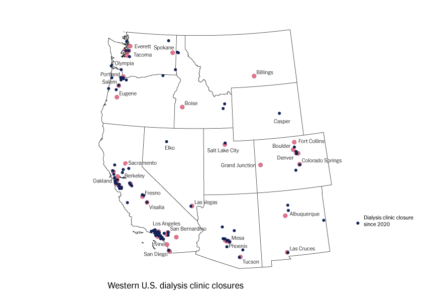

Outbound Trip
Patients leave Tillamook and head to clinics in Astoria and Lincoln City.
Return Trip
Now they drive back to Tillamook, often tired from treatment.
The COVID-19 pandemic triggered an avalanche of changes in the US healthcare system, accelerating changes that have been underway for years. The stressors have been especially strong in rural America, which is currently plagued by an exodus of healthcare facilities. For the more than 500,000 Americans who rely on dialysis to stay alive after their kidneys have failed, this shortage is especially concerning. From 2021 to 2023, over 200 dialysis centers across the United States have shut their doors.
The situation is especially acute in rural parts of the West.

As of January 2025, nearly half of all U.S. counties lack a dialysis clinic.
This is one story of a shuttered clinic.

A PLACE TO CALL HOME
Each week, 12 individuals spend nearly half their waking hours hooked up to life support machines in Tillamook, Oregon. A small town of just over 5000 in the northwest corner of the state, the town is best known as the eponymous headquarters of the Tillamook Creamery. Tillamook's small clinic treats an almost infinitesimal proportion of the more than half a million Americans whose kidneys have failed and require dialysis three times each week to stay alive. But for the handful of patients treated at the US Renal-run clinic, the tiny facility is a lifeline.
The clinic servies a wide geographic area- any of the areas in blue are within an hour's drive of Tillamook, with darker colors representing longer drives. The only other clinics are in Astoria or Lincoln City.
A CLOSURE WITHOUT CLOSURE
On January 23, 2024, patients checked in for what they thought would be just another four-hour session. Instead, they were told that in one month, the clinic would cease operations. In a statement to local newspapers, the company said "Providing care in communities like Tillamook is a challenge many health care providers face as Medicare reimbursement has not kept up with the rising costs of operating a dialysis center."
Retired dialysis social worker Maggie Alberton said, "When it comes to a point that the for profit agency decides that it is no longer as profitable, how can they morally and ethically deny the need? From what I know about folks with chronic illnesses, when they have such an insult to their support, they usually turn their anger inward and die. For dialysis patients, it would be easy to just skip 3 treatments and face the the agony that their dying process may give them. Some may ask for hospice, but I will bet that folks betrayed by a for profit organization that has gleaned wonderful profits from their unfortunate situation, would just die."
STEP THREE
You can add as many steps as you want. You could even add an image inside a scrolly step — just look at Etai, below:

Scroll down to see patients traveling to treatment.
Patients leave Tillamook and head to clinics in Astoria and Lincoln City.
Now they drive back to Tillamook, often tired from treatment.